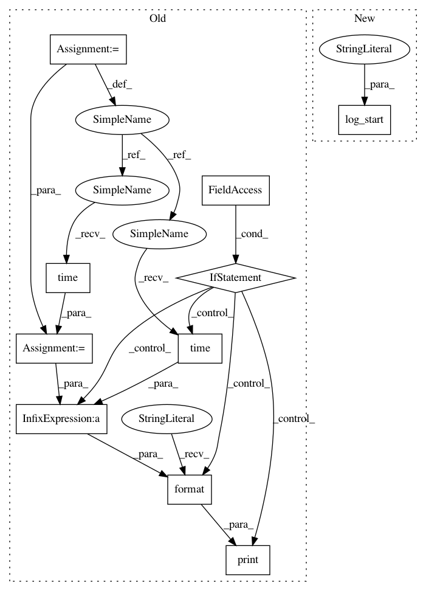

6f32626effedfaeba3c51debb39d556302922728,Python/phate/phate.py,,calculate_landmark_operator,#,142
Before Change
// spectral clustering
if verbose:
print("Calculating SVD...")
start = time.time()
U, S, _ = randomized_svd(diff_op,
n_components=n_svd,
random_state=random_state)
if verbose:
print("Calculated SVD in {:.2f} seconds".format(
time.time() - start))
start = time.time()
print("Calculating Kmeans...")
kmeans = MiniBatchKMeans(n_landmark,
init_size=3 * n_landmark,
batch_size=10000,
random_state=random_state)
clusters = kmeans.fit_predict(np.matmul(U, np.diagflat(S)))
landmarks = np.unique(clusters)
if verbose:
print("Calculated Kmeans in {:.2f} seconds".format(
time.time() - start))
// transition matrices
if is_sparse:
pmn = sparse.vstack(
[sparse.csr_matrix(kernel[clusters == i, :].sum(
axis=0)) for i in landmarks])
After Change
n_components=n_svd,
random_state=random_state)
log_complete("SVD")
log_start("KMeans")
kmeans = MiniBatchKMeans(n_landmark,
init_size=3 * n_landmark,
batch_size=10000,
random_state=random_state)
In pattern: SUPERPATTERN
Frequency: 4
Non-data size: 10
Instances
Project Name: KrishnaswamyLab/PHATE
Commit Name: 6f32626effedfaeba3c51debb39d556302922728
Time: 2018-05-22
Author: scottgigante@gmail.com
File Name: Python/phate/phate.py
Class Name:
Method Name: calculate_landmark_operator
Project Name: KrishnaswamyLab/PHATE
Commit Name: 6f32626effedfaeba3c51debb39d556302922728
Time: 2018-05-22
Author: scottgigante@gmail.com
File Name: Python/phate/phate.py
Class Name:
Method Name: calculate_kernel
Project Name: KrishnaswamyLab/PHATE
Commit Name: 6f32626effedfaeba3c51debb39d556302922728
Time: 2018-05-22
Author: scottgigante@gmail.com
File Name: Python/phate/phate.py
Class Name: PHATE
Method Name: fit_transform
Project Name: KrishnaswamyLab/PHATE
Commit Name: be95ff167e1ea0195e32beb0618228d18a4098eb
Time: 2018-05-28
Author: scottgigante@gmail.com
File Name: Python/phate/phate.py
Class Name: PHATE
Method Name: calculate_potential
Project Name: KrishnaswamyLab/PHATE
Commit Name: 6f32626effedfaeba3c51debb39d556302922728
Time: 2018-05-22
Author: scottgigante@gmail.com
File Name: Python/phate/phate.py
Class Name:
Method Name: calculate_landmark_operator